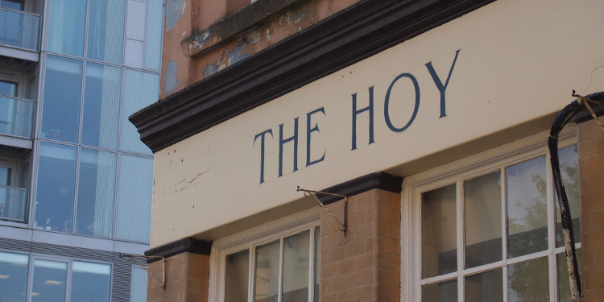

History
Over the last 20 years so much has changed all around the area. Where there was once the crash of steel from the scrap metal trades there is now the scrape of of heels and drone of vehicles over Creek Bridge.
Please post your story or questions to hoykitchen@deptfordcreek.net.